Terracotta tile and an arched niche get a Spanish-style bathroom most of the way there.
What finishes the room is a second layer of smaller decisions, lighting, accessories, restraint, that most guides mention briefly and move past too quickly.
This is that layer, assuming the core tile-and-arch work is already settled.

The Finishing Layer
Finish With Plants
A simple plant, especially one suited to a humid bathroom environment, brings the Mediterranean's outdoor connection into the room.
This is one of the lowest-cost, highest-impact finishing touches on this entire list.
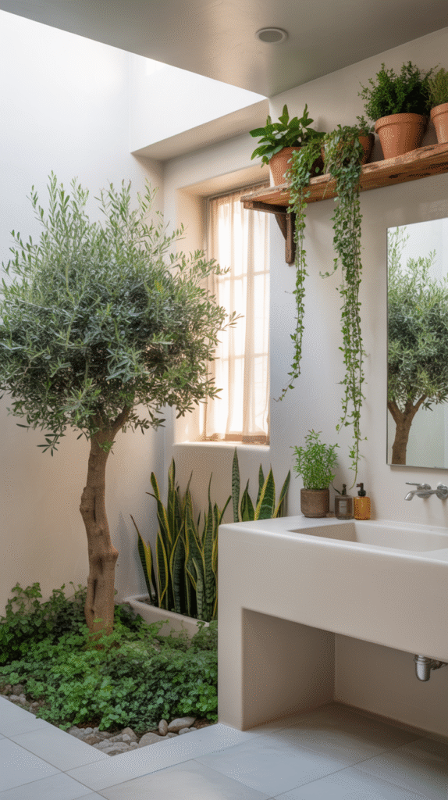
Mix Old and New Deliberately
A genuinely aged or vintage piece next to a clean modern fixture creates the layered, collected feeling central to this style.
An all-new room, however well-executed, tends to miss this specific quality that makes the style feel authentic rather than showroom-staged.
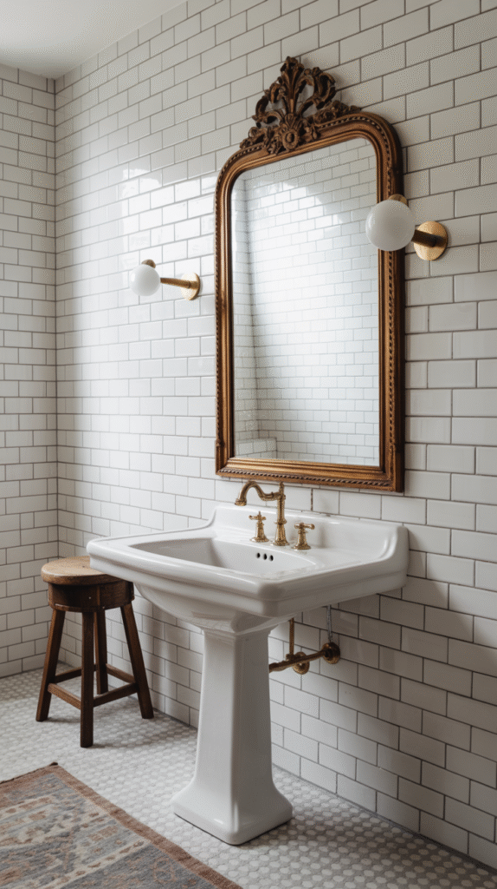
Practice Real Restraint
Simple doesn't mean boring here, a few well-chosen pieces, with real negative space between them, reads as more considered than a fully decorated room.
This restraint is what keeps the earthy palette and texture work from tipping into visual clutter.
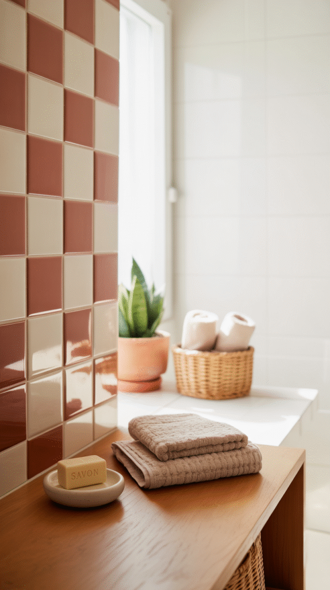
Bring In Genuine Mediterranean Accessories
A hand-thrown ceramic dish, woven baskets, or a simple glazed vase all extend the room's material story into the smallest details.
These finishing pieces matter more here than in most bathroom styles, since the whole aesthetic depends on material authenticity coming through at every scale.
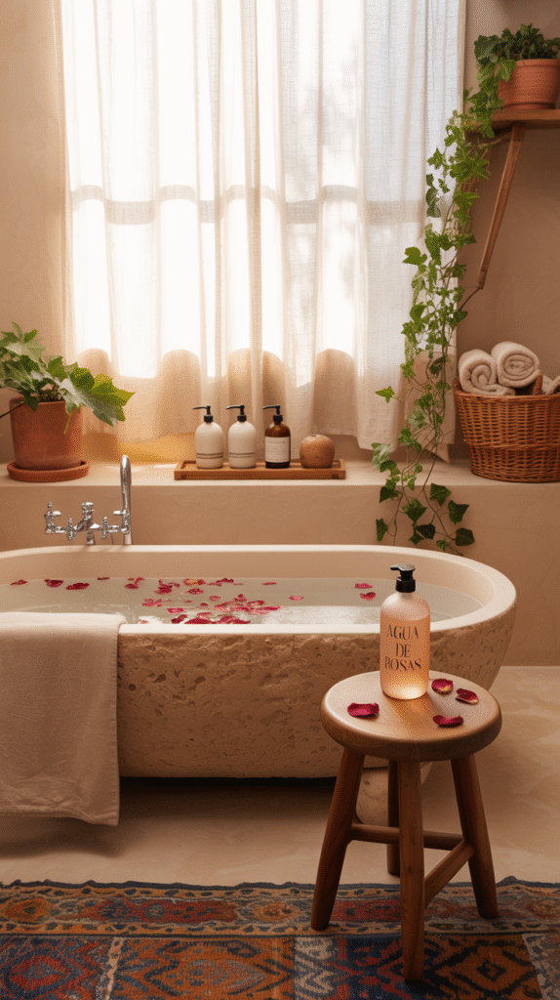
Add Black for Contrast
Black fixtures, hardware, or a framed mirror cut through an otherwise warm, earthy palette, giving the eye somewhere crisp to land.
This single contrast point keeps the room from reading as uniformly beige, which is one of the more common ways this style goes slightly flat.
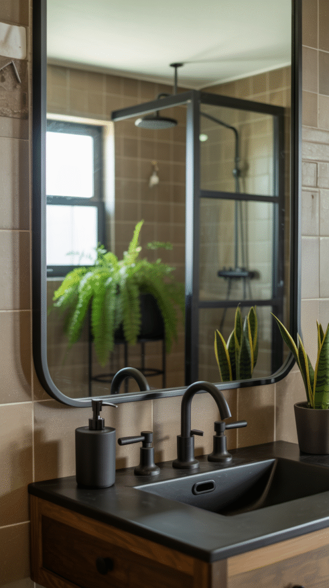
Light It Like the Mediterranean
Warm, slightly dim ambient lighting, with one more dramatic fixture as a focal point, does more for the room's mood than the tile work alone ever could.
This is the detail most likely to get rushed after the bigger structural choices are made, even though it affects how the whole room reads every single day.
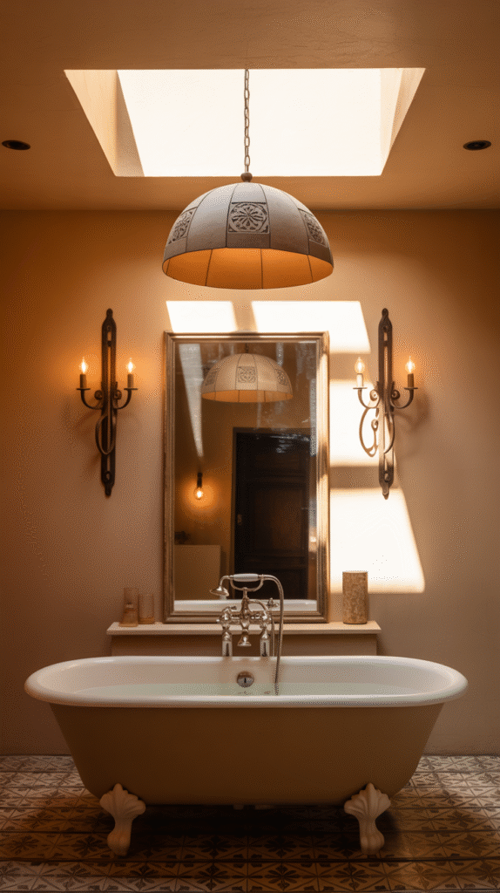
The Foundation, Briefly
Warm earthy tones, real texture, a statement tile moment, and an arched detail somewhere in the room are the core elements worth getting right first, worth a deeper look on their own if they're not already settled.
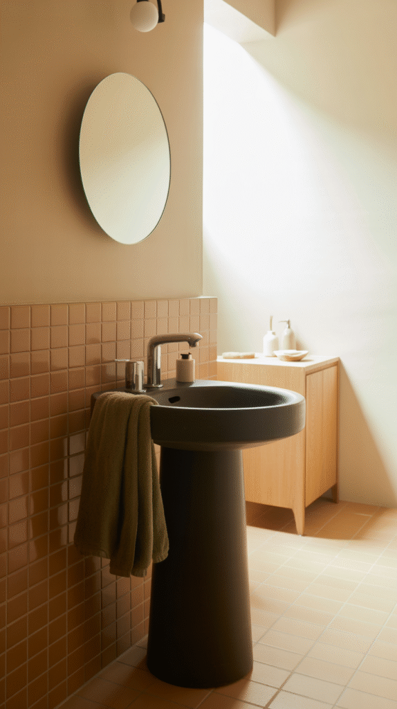
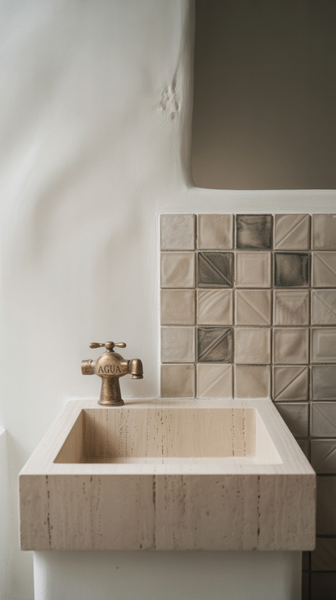
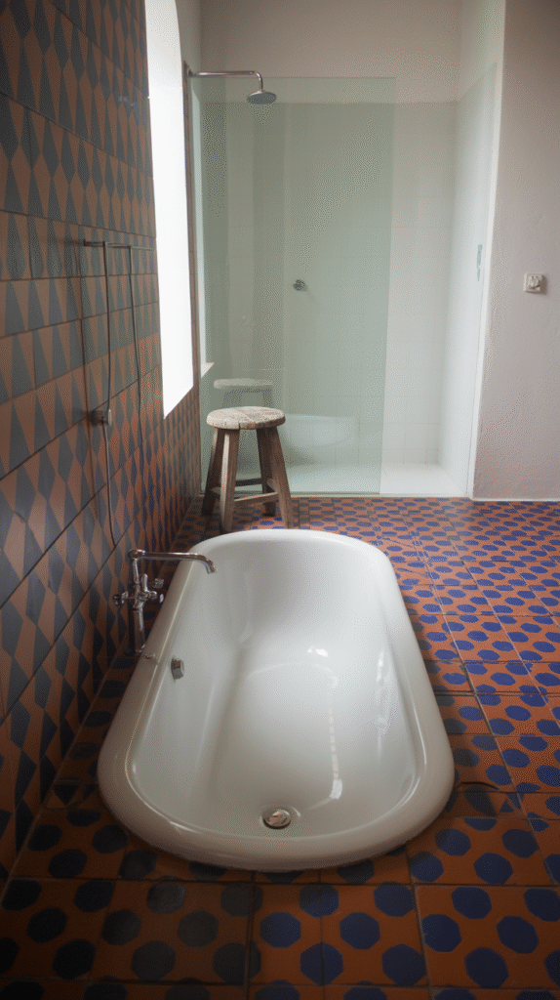
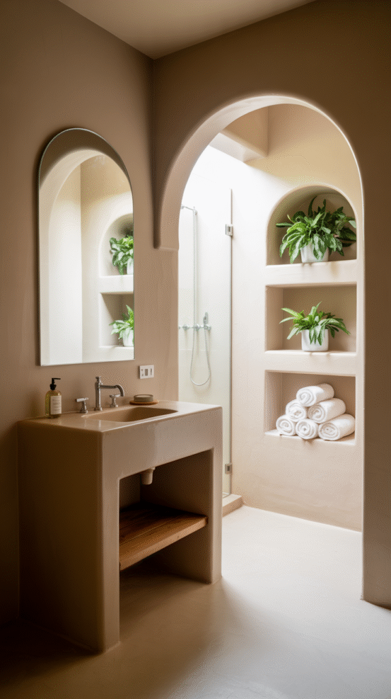
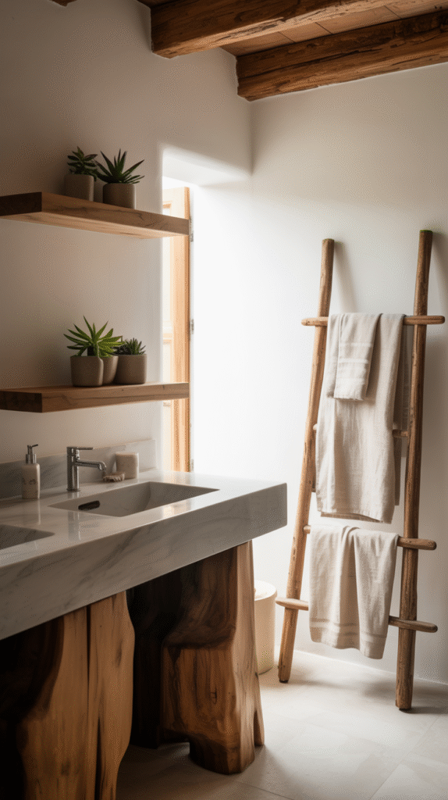
Ready to Bring the Mediterranean In
None of this finishing layer works without the foundation already in place, tile, texture, an arch, warm tones.
Once that's settled, warm lighting, a bit of black contrast, genuine accessories, and real restraint are what actually finish the whole room.